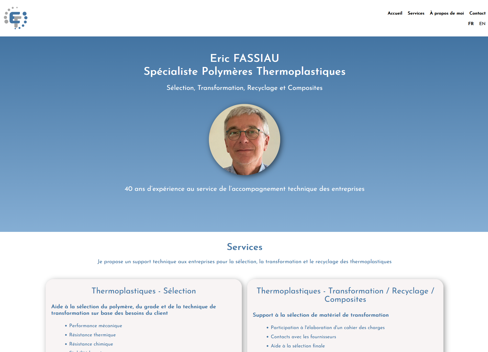

Sites vitrines rapides et visuels pour indépendants et petites
entreprises
Design sur mesure & développement HTML/CSS/JavaScriptSans WordPress, sans maintenance inutile
Beaucoup de sites web sont lents, compliqués à maintenir et peu adaptés
au mobile.Pour un simple site vitrine, ces solutions sont souvent inutilement
complexes et onéreuses.
Une solution simple, rapide et durable
Je crée des sites vitrines sur mesure, développés en HTML, CSS et
JavaScript.Résultat : un site rapide, sécurisé et stable, sans dépendre d’un
système lourd ou de plugins.
Design personnalisé
Optimisé mobile et desktop
Performances élevées
SEO de base inclus
Mise en ligne clé en main
Ce que je fais
Sites vitrines
Design sur mesure
Animations légères
Modifications sur demande
Ce que je ne fais pas
WordPress
Abonnements mensuels
Back-office complexe
Maintenance lourde
Quelques travaux
Une vitrine pour un consultant indépendant

Fassiau Polymer Consulting
Rapide, responsive et sans CMS
La boulangerie
Rapide, responsive et sans CMS
Une vitrine pour un garage indépendant
Une vitrine pour un garage indépendant
Le commerce
Rapide, responsive et sans CMS
Comment ca se passe?
Discussion sur vos besoins
On échange sur votre activité, vos objectifs et le message que
votre site doit transmettre.
Proposition & devis
Je vous propose une solution claire, adaptée à vos besoins, avec un
devis transparent.
Design et développement
Je conçois le design et développe le site en mettant l’accent sur
la clarté et la performance.
Ajustements
Vous testez le site et nous affinons ensemble les derniers détails
si nécessaire.
Mise en ligne
Le site est mis en ligne et prêt à être présenté à vos
clients.
Qui suis-je?
Je suis développeur web avec un background d’artiste 3D.
J’accorde une grande importance au design, à la performance et à la
clarté. Je travaille principalement avec des indépendants et
petites entreprises.